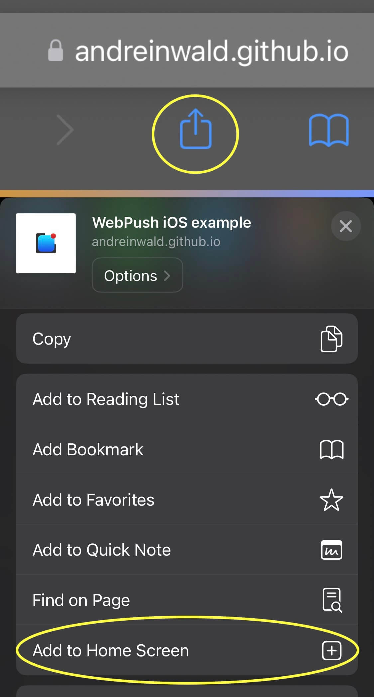

Inclinotifier
Looks like you're not on an mobile device!
Scan this QR code to open it in your mobile device
Scan this QR code to open it in your mobile device
Looks like you're neither on a IOS or Android device
If this is incorrect, report issue at https://github.com/skorpi0n/inclinotifier/issues
If this is incorrect, report issue at https://github.com/skorpi0n/inclinotifier/issues
For Inclinotifier to work, you need to add it to your Home Screen.

Visit this code at GitHub!
- Z-axis: 0°
- Z-Distance: 0mm
- X-axis: 0°
- X-Distance: 0mm